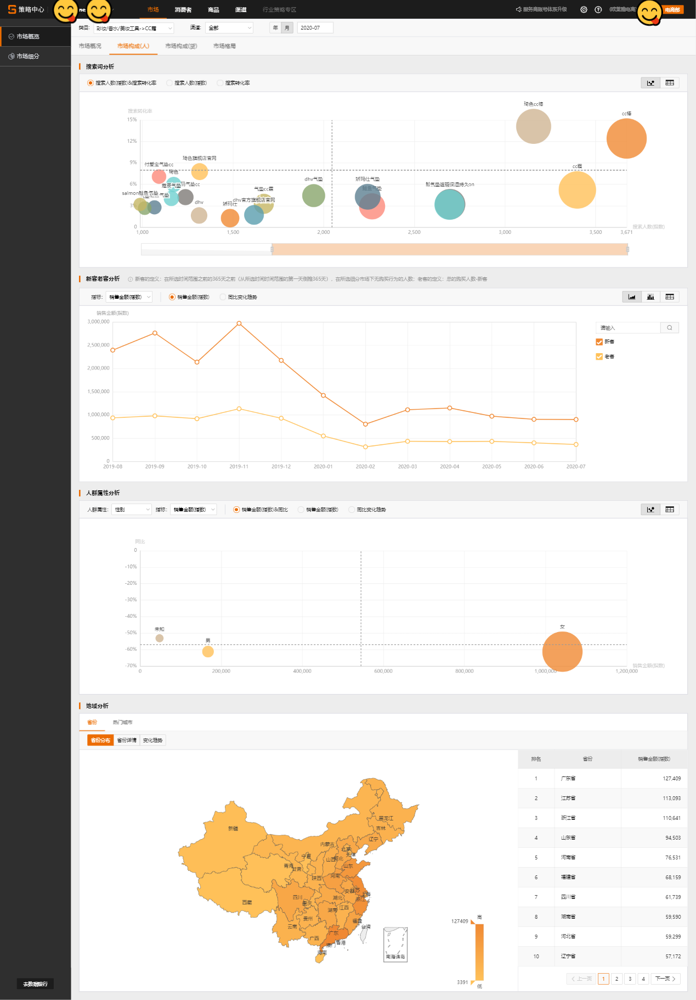
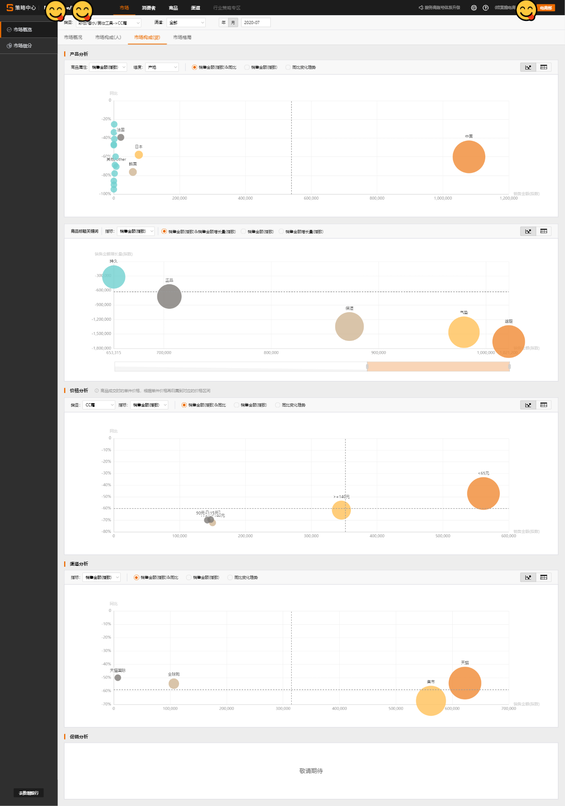

B.10 内容分析

- 内容分析
策略中心的数据都经过指数化，对真实值的大小进行了脱敏，脱敏后的变化趋势、同比接近真实。
销售金额(指数)
定义：在所选时间范围和市场下，总的成交金额。 \[ 销售金额(指数) = 销量(指数) × 平均价格 \]
销量(指数)
定义：在所选时间范围和市场下，商品成交的总件数 \[ 购买人数(指数) × 购买频次 × 单次购买量(指数)=销量(指数) \]
平均价格(指数)
定义：在所选时间范围和市场下，商品的平均成交价格
定义：在所选的时间范围和市场下，总的购买人数(去重)
定义：在所选的时间范围和市场下，每个消费者平均购买次数
定义：在所选的时间范围和市场下，消费者平均一次购买的商品件数 注意：因为销量(指数)和购买人数(指数)的脱敏程度不一致，单次购买量(指数)会有小于1的情况
定义：在所选时间范围和市场下，搜索关键词后，点击搜索结果页中商品的总人数(去重)
定义：搜索点击并购买的人数除以总的搜索人数

定义：搜索人数和搜索转化率构成的双轴气泡图分析；搜索人数和搜索转化率的时间趋势
新客：在所选时间范围之前的365天之前（从所选时间时间范围的第一天倒推365天），在所选细分市场下无购买行为的人数；
老客：总的购买人数-新客
比较新老客的销售金额和购买人数
可选性别、年龄、月均消费、城市等级进行比较，比较的指标一般是销售金额、购买人数以及它们的变化趋势。
应用: 省份、热门城市的销售金额、同比变化趋势。

商品属性：销售金额，销量，购买人数 维度：产地、功效、适合肤质等
指标：销售金额，销量，购买人数，商品个数
商品成交时的单件价格，根据单件价格再归属到对应的价格区间。如果有细分的三级类目，可选择三级类目查看价格分析。 指标：销售金额，销量，购买人数，搜索人数
指标：销售金额，销量，购买人数，搜索人数

指标：销售金额，销量，平均价格，购买人数，购买频次
指标：销售金额，销量，购买人数，搜索人数
在所选条件下，品牌总的成交金额
在所选条件下，品牌总的购买人数(去重）。隐私保护提示：为了保护用户隐私，如下分析涉及到人数的指标均进行小噪声注入
在所选条件下，品牌购买人群平均购买的叶子类目数量
在所选条件下，品牌购买人群平均购买的金额；客单价保留两位小数，四舍五入，因此购买人数*客单价得到金额和和页面上所给出的销售金额指标有一定差别
在所选条件下，品牌下的新品总的成交金额。这里的新品指自商品在天猫首次上架之日起在特定时间范围内，且未参加“极速抢、每日必买、聚划算品牌清仓、每日必买（买就返）”等营销活动或频道的商品
在所选条件下，品牌下的新品总的购买人数(去重）
在所选条件下，有过品牌商品购买行为且之前365天没有发生过品牌商品行为的消费者，在之前365天购买品类下其他各品牌的人数（去重）
大快消策略人数在销售金额和购买人数上的变化趋势
分析品牌下各类目的增长情况，仅展示所选范围下的Top20二级类目/叶子类目，选择品牌全部类目时，展示Top20二级类目，选择二级类目时，展示Top20叶子类目